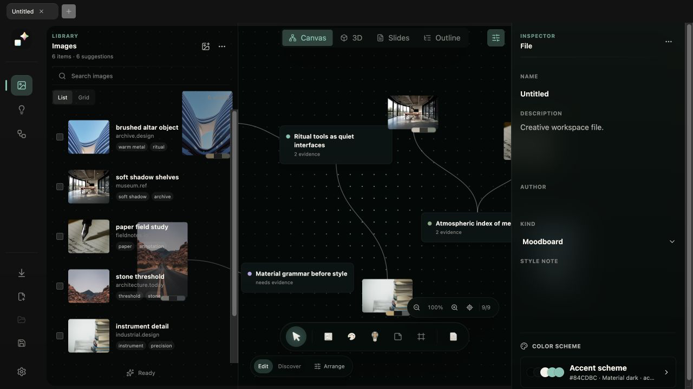

macOS · Local-first
A calm workspace for turning references into ideas.
KIRA brings references, thinking, structure, and presentation into one local-first app. Import visual material, arrange it on a flexible canvas, connect evidence to ideas, then move the same project into 3D, Slides, or Outline — without rebuilding the work, and without it ever leaving your Mac.

One project, four views
The same research structure, viewed the way you need it at each stage.
Canvas
Organize references and build the idea graph. Images, palettes, diagrams, and ideas connect through typed relations — supports, contrasts, example, mood — not generic link nodes.
3D
Step back and explore the same graph spatially, as a discovery layer rather than an editing surface.
Slides
Turn the current research structure into a presentation deck, and export straight to HTML or PPTX.
Outline
Generate a structured outline from a cluster of linked ideas — strong points, evidence gaps, narrative order.
Browser capture, without leaving the page
The KIRA Capture extension is a direct, local bridge into a running project — not a bookmarklet that dumps everything into an inbox to sort later.
Local bridge, not cloud
The desktop app runs its own listener on your machine; the extension talks straight to it. No account, no server round-trip — capture works fully offline.
Resolves the real image
Walks srcset, <picture>, and background images to find the highest-quality source — including a Pinterest-aware upscaling step that pulls full-resolution pins instead of preview crops.
Three capture motions
Drag an image onto KIRA's floating drop pad, Alt+right-click for instant quick-capture, or use the right-click "Capture to KIRA" menu.
Targets a specific node
The drop pad shows your live canvas nodes, so a capture can land on the exact idea it belongs to instead of a generic pile.
Local-first, by design
Everything lives in one project package on your Mac.
Native .kira package
Normalized SQLite data, local thumbnails, image fingerprints, and duplicate detection — no server, no sync.
Optional AI assistance
On-device Apple Foundation Models, or your own Claude Code, Codex, OpenAI, Anthropic, or Gemini connection — always opt-in, always your key.
Version checkpoints
Branches and checkpoints let you explore directions without losing earlier work.